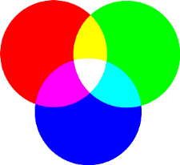
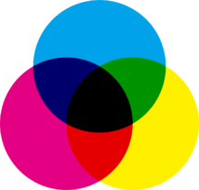
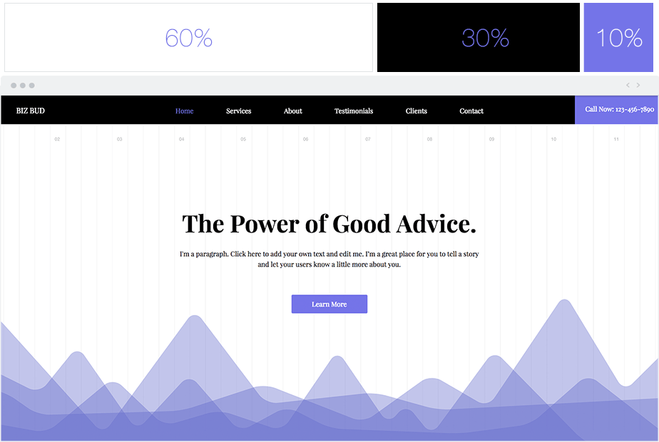

¿Qué es el color?
El color no es más que una percepción visual del reflejo de la luz en nuestros ojos. La luz no es más que una onda electromagnética cuyo espectro visible al ojo humano va desde el rojo hasta el ultravioleta.
Los colores primarios
Todos los colores se obtienen a partir de la combinación de los colores primarios. Estos pueden clasificarse en:
Colores luz
Los colores luz son tres colores primarios: el Rojo, el Verde y el Azul. A estos colores también se les llama colores RGB (colores de las pantallas). Si combinamos estos tres colores obtenemos el color blanco y si los quitamos todos, obtenemos el color negro.
Colores pigmento
Los colores pigmento están formados por los tres colores primarios: Cian, Magenta y Amarillo. Si juntamos los tres colores primarios, sale el color negro.
Si mezclamos a partes iguales dos colores primarios, obtenemos un color secundario. Y si mezclamos y color primario con un secundario obtenemos un terciario. Así podemos seguir mezclando hasta el infinito.
Clasificación de colores
Dentro de los colores existe una clasificación según la temperatura de los mismos. Existen dos tipos de clasificaciones que son:
Colores cálidos
Los colores cálidos son los que van del rojo al amarillo.
Colores fríos
Los colores fríos van desde el azul hasta el verde.
Propiedades del color
Los colores tienen tres propiedades que nos permiten diferenciarlos:
Tono
Es la propiedad que nos permite diferenciar unos colores de otros.
Saturación
Es la propiedad que define la intensidad de un color y varía según el nivel de gris que tenga.
Brillo
Es la propiedad que define cómo de oscuro o de claro se encuentra un color y varía según el nivel de negro o blanco que tenga respecto al color puro.
Psicología del color
El color es un elemento indispensable en el diseño de páginas web ya que mediante él se pueden definir los elementos representados. Los colores son capaces de transmitir emociones y provocar así emociones en nuestro cerebro. A continuación puedes ver cada color que sentimientos atrae:

Las paletas de colores
Una paleta de colores es un conjunto o variedad de colores usados en un sitio web. Todas las paletas suelen tener armonía y relación entre los colores que la componen.
Regla del 60 30 10
Esta fórmula corresponde a la teoría decorativa que considera que debemos utilizar un color (o tonalidad) para el 60% del espacio, otro secundario para el 30% y otro para el 10% restante.
Herramientas para crear paletas de colores
En internet existen muchas herramientas para crear nuestras propias paletas. A continuación dejo los enlaces a las herramientas que he visto más útlies.